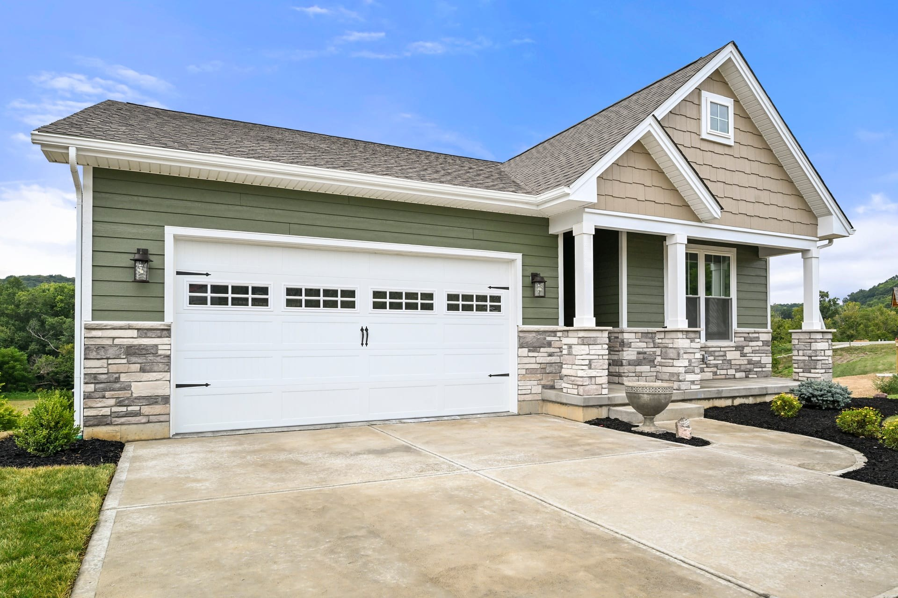

Right-sized, and built to last
Not every custom home has to be big. This Greendale walkout ranch fits two bedrooms, a flex room and three full baths into roughly 1,700 finished square feet, and it feels larger than that because the plan is open and the ceilings go up where it counts.
The exterior is Craftsman in character, with sage green siding, a stone base and a gabled covered entry. From the start of construction to move-in took about four and a half to five months in 2024. Here is how the house comes together, room by room.

Stone, siding and a welcoming porch
A two-car garage with white paneled doors sits to the left, and the front door is tucked into a covered entry whose walls are finished in the same stone as the base of the house. The stone wainscot keeps the lower part of the walls looking solid and tidy, while the green lap siding above it gives the house its color.
A paved drive, mulched beds and a view out across open fields complete the setting.


A great room under a vaulted ceiling
The great room is where the house opens up. The ceiling vaults over the living area, a stone fireplace with a wood mantle anchors one wall, and windows on both sides draw in light and the view. The wood-look flooring runs from the great room into the kitchen, which keeps the whole main level feeling like a single space.
A set of stairs with a stained wood newel post and black iron balusters leads down to the walkout level, so the stairs become a design feature rather than something to hide.


A kitchen that is the center of the plan
The kitchen sits right in the open plan, so whoever is cooking is part of the conversation. White cabinets with under-cabinet lighting wrap the walls, stainless appliances sit within easy reach, and a large island in a darker, weathered-gray finish gives the room contrast and a place to sit.
A farmhouse-style sink is set into a granite-look counter, and a gray herringbone tile backsplash behind the range adds pattern without overpowering the white cabinetry.


Barn doors, bedrooms and a flex room
Natural-stained sliding barn doors with a classic X-brace pattern add warmth and character, and they save the floor space a swinging door would use. They open onto the primary bedroom and bath, and give the flex room the option to be open or closed off.
The bedroom walls take color well, and one has a bold navy accent wall that stands out against the soft neutral paint elsewhere. Carpeted bedrooms, ceiling fans and a walk-in closet with wire shelving make for comfortable, practical private spaces.


A primary bath with a freestanding tub
The primary bath is one of the nicest rooms in the house. A freestanding soaking tub sits beneath a frosted window, so the room is private and bright at once. The vanity has a granite-look top and white cabinets, and the walk-in shower is finished with large wood-look tile and a vertical stripe of deep blue-gray brick tile, with a pebble floor underfoot.
Dark fixtures tie the room together, and a recessed niche keeps shampoo and soap out of the way.


A covered deck and a walkout with room to grow
At the back of the house, a covered deck with white railings looks out over open fields and wooded hills. It makes the main floor feel larger in good weather and is a comfortable place to sit even when it is not sunny.
Below the deck, the walkout basement is mostly unfinished, with exposed floor joists, a concrete floor and windows that let in daylight. It was left unfinished, so it can be finished later when the owners’ needs change.


Building small, and building well
This home shows that a smaller custom home does not mean fewer details. If you are thinking about a right-sized home with room to finish later, we would be glad to talk through your lot, your priorities and a realistic budget.